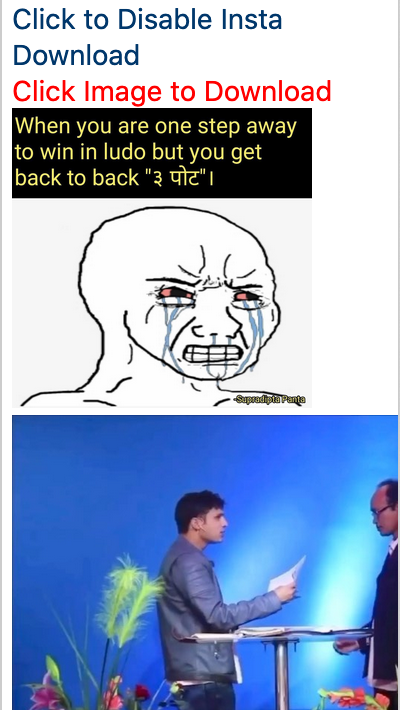

Enjoy Downloading Instagram Images
If on the top right it says "Click to disable Insta download", wait for few seconds then all the images will appear, click on them and save them. else click on "Click to enable Insta download".
If that doesn't work then probably another add-on, script blocker is probably blocking the plugin
